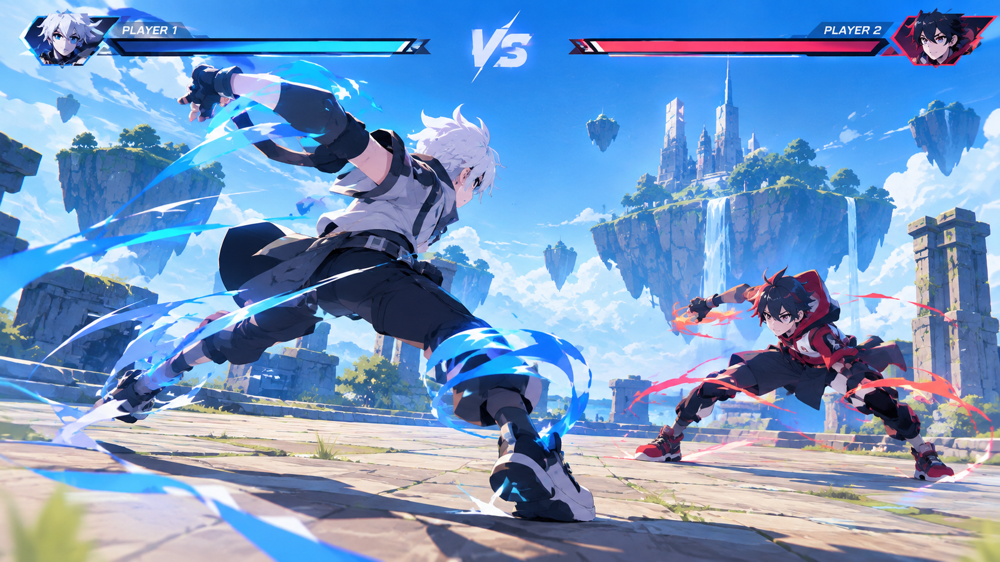
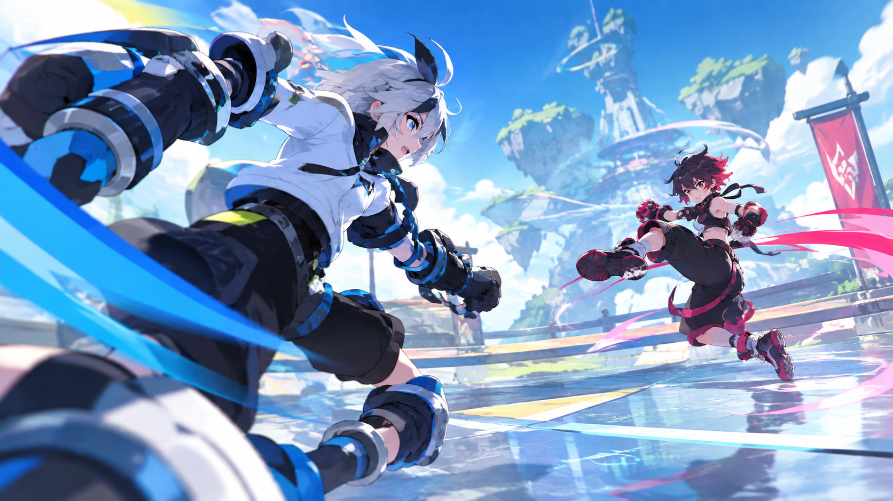

[作品タイトルを記入]
[誰のどんな課題に向けた作品か、目的と概要を短く説明します。]
課題[取り組んだ課題・背景]
担当[チーム人数と自分の役割]
工夫[考えたこと・試したこと]
学び[結果や振り返り]
GAME PORTFOLIO / [YEAR]
[志望職種] · STUDENT
[作品づくりで大切にしている考え方や、目指す体験を記入]
制作実績を見る ↓
SELECTED WORKS / [YEAR][学んでいること、興味のある領域、制作で大切にしていることを記入。作品の背景や自分の役割につながる内容にします。]
課題、工夫、自分の役割。
プロジェクトごとに制作の背景を紹介します。
[誰のどんな課題に向けた作品か、目的と概要を短く説明します。]
[PROJECT TYPE] / [YEAR]

[PROJECT TYPE] / [YEAR]
スキルは作品や活動と結びつけ、
経験した範囲を具体的に記載します。
[ツール・スキル] [使用経験]
[ツール・スキル] [使用経験]
[ツール・スキル] [使用経験]
[ツール・スキル] [使用経験]
[ツール・スキル] [使用経験]
[ツール・スキル] [使用経験]
活動や経験から得たことを、
自分の言葉で短く伝えます。
[活動内容と、そこから学んだこと]
[取り組みと自分の担当]
[補足説明]
[連絡を歓迎するメッセージ]
メールで連絡する ↗ 公開前にメールアドレスを自分の連絡先へ差し替えてください。